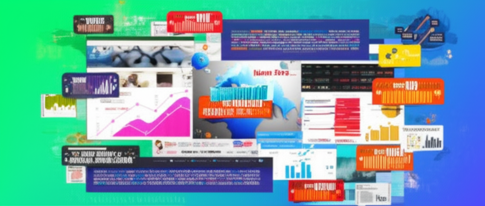

# 今日新聞摘要與分析
## 引言
本文整理並分析了近24小時內的熱門新聞，涵蓋國際、國內、健康、科技等多個領域。透過對各新聞來源的摘要，旨在為讀者提供快速了解重要資訊的管道，並對部分新聞事件進行初步解讀。
## 主體內容
### 第一點：國際新聞與科技進展
大紀元報導了一項利用機械臂建造建築的新技術，顯示了建築行業在自動化和效率提升方面的潛力。星巴克標誌的緊湊型建築使用一台計算機控制的機械臂完成大部分工作，這不僅可能降低建造成本，也可能加速建築速度，預示著建築行業的未來發展方向。
### 第二點：台灣本地新聞與健康議題
多個台灣本地新聞網站提供了豐富的資訊。匯流新聞網關注數位匯流產業，提供最新的科技資訊。自由健康網則報導了台大與北醫大在肝癌治療方面的新發現，指出控制YAP的開關STK40與SLK基因的新方向。此外，世界新聞網關注睡眠健康，強調改善睡眠衛生是關鍵。這些新聞反映了台灣在科技發展、醫療研究以及民眾健康方面的關注。值得注意的是，自由健康網的新聞發布時間顯示為未來時間("2025-05-03")，可能存在錯誤。
### 第三點：生活與社會議題
NOWnews今日新聞作為台灣最大的網路原生新聞網站，提供即時的新聞資訊。金門日報則關注本地新聞，例如居民的生計與生活細節。新住民全球新聞網提供多語種版本的新聞，旨在幫助新住民了解國內外時事。一個臉書連結則討論了中年後減重的方法，突顯了台灣社會對成人肥胖問題的重視。
## 結論
本次新聞摘要涵蓋了國際科技創新、台灣本地發展、健康醫療以及社會議題。值得注意的是，部分新聞來源可能存在時間錯誤，需要進一步核實。總體而言，這些新聞反映了當前社會對科技進步、健康生活、社會融合以及個人健康的關注。